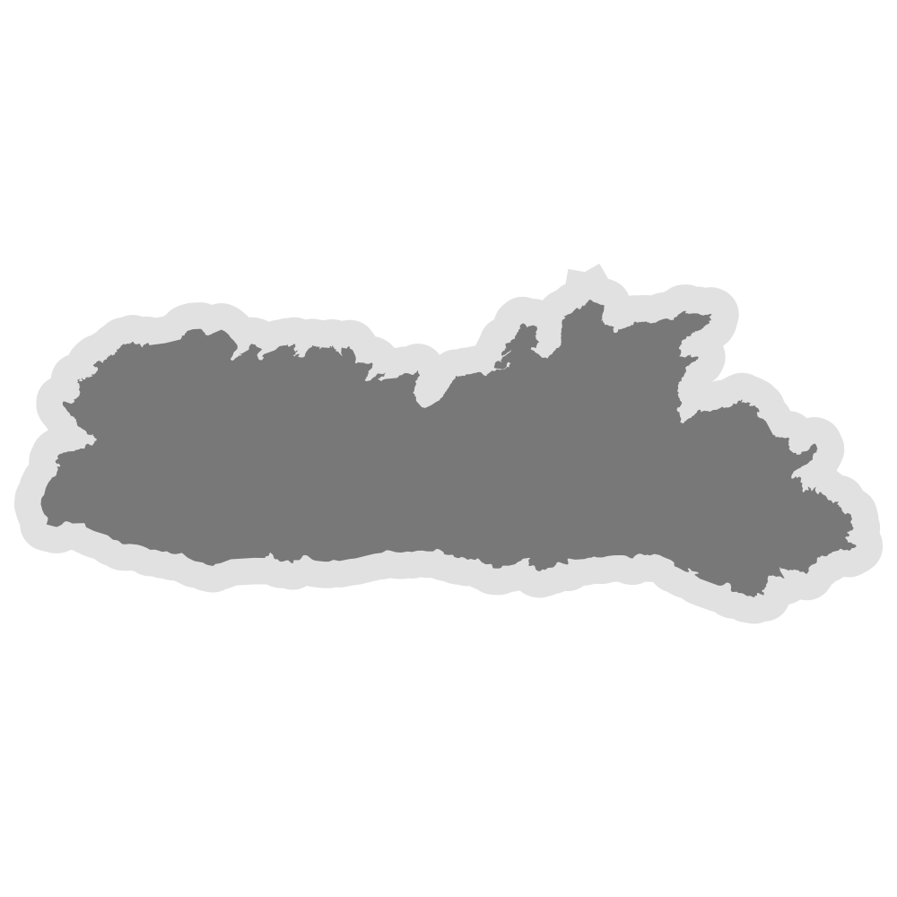
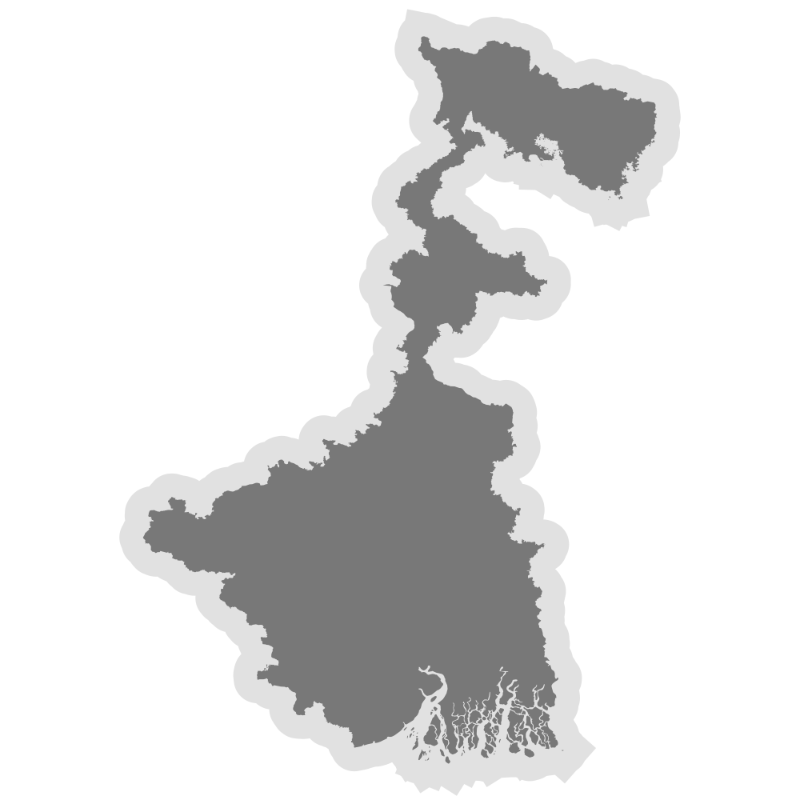
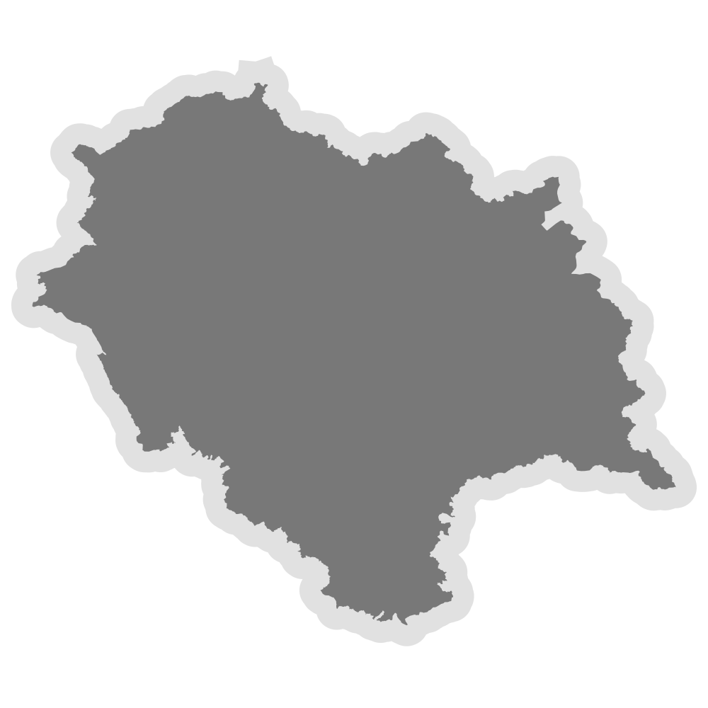
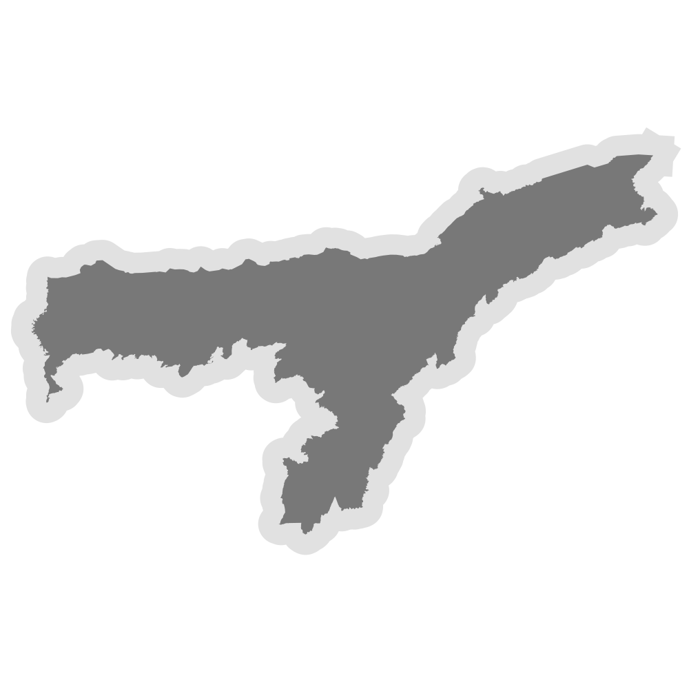
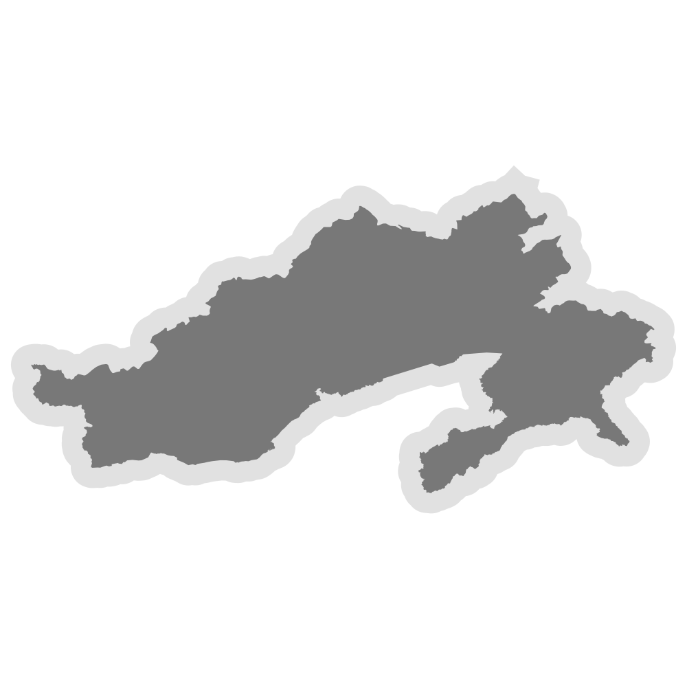
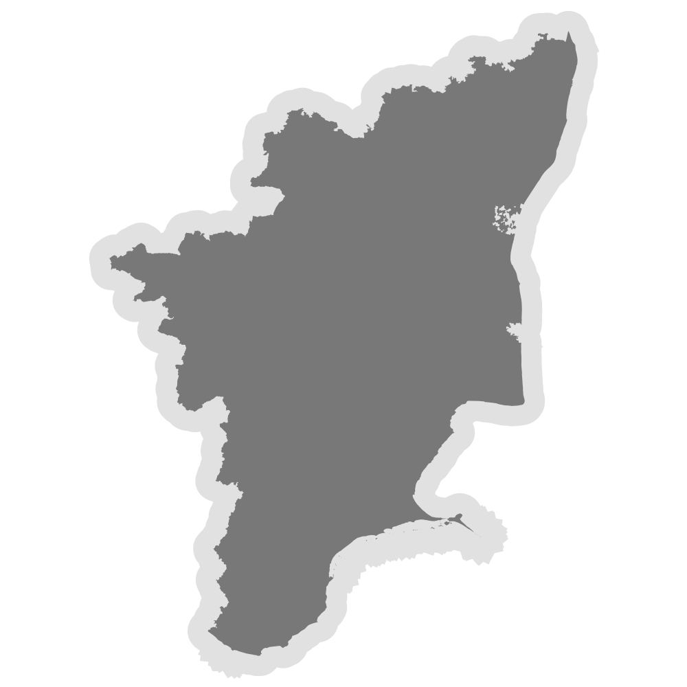
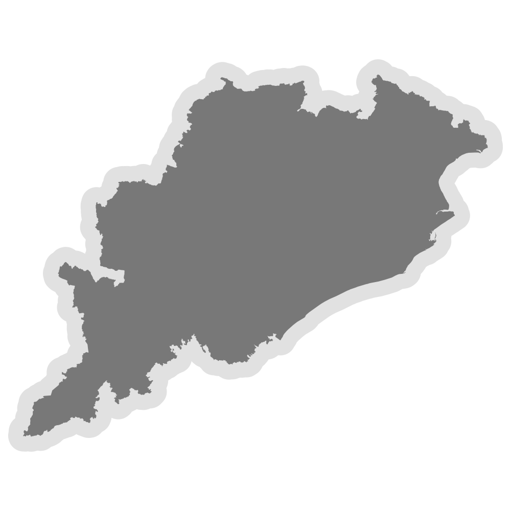
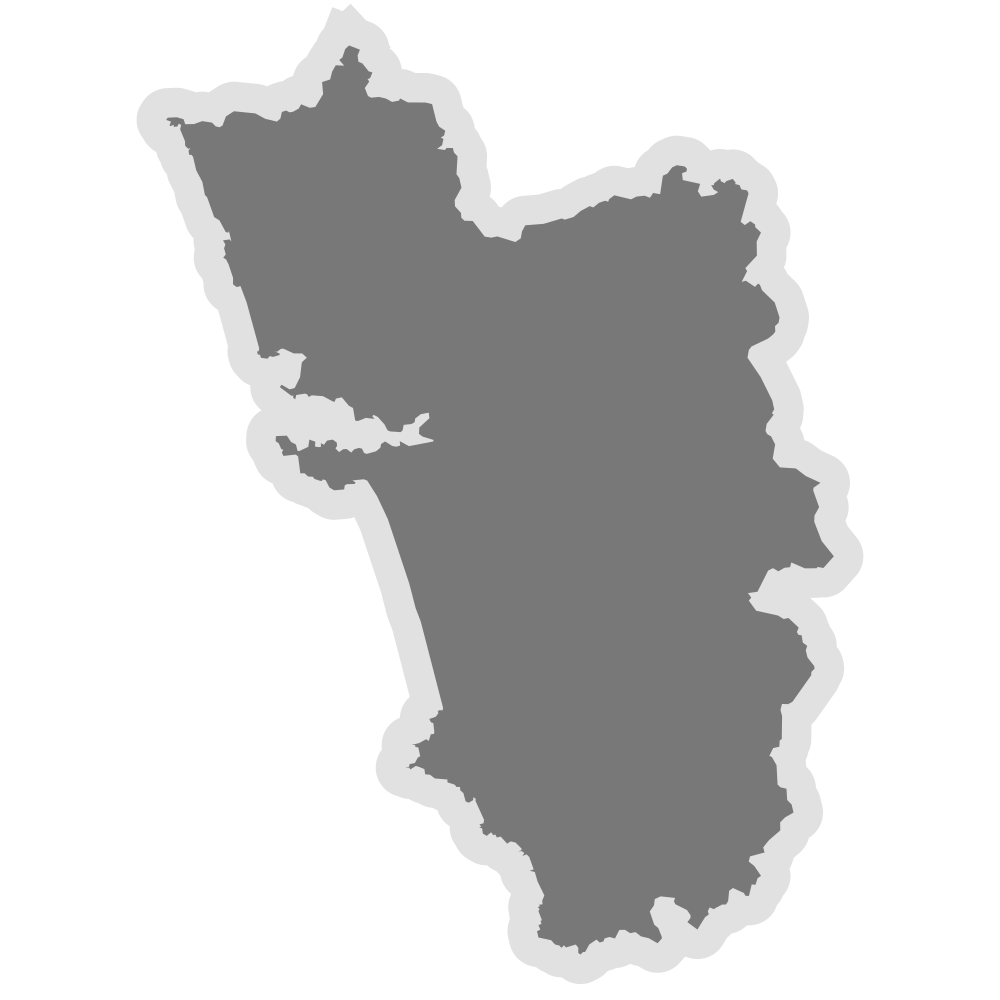
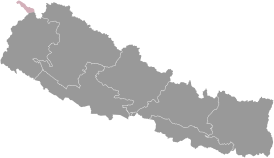

Projects & Milestones
Explore our on-the-ground work and key achievements across India and beyond.

Meghalaya
S.U.P.E.R Campaign, Animal Homes Project, Mutong Plastic Festival, and more.
View Milestones →
West Bengal
Community involvement in Darjeeling, Menstrual Health Campaigns, and urban projects in Kolkata.
View Milestones →
Himachal Pradesh
Eco-tourism waste collection in Kalga, Eco-Toilet innovation, and glass bottle architecture in Manali.
View Milestones →
Assam
Island-wide plastic-free drive in Majuli, building flood-resilient designs with BottleBricks and bamboo.
View Milestones →
Arunachal Pradesh
Grassroots waste action in Tezu, engaging households and schools in plastic collection.
View Milestones →
Tamil Nadu
Urban and coastal sustainability in Chennai, Marina Beach clean-ups, and institutional workshops.
View Milestones →
Odisha
Rural sanitation and energy transformation in remote districts, including eco-toilet construction and solar lamp distribution.
View Milestones →
Goa
Eco-retreat from waste project in South Goa, utilizing materials from clean-ups at Arambol, Anjuna, and Baga.
View Milestones →
Nepal (International)
Cross-border adaptation in Lamzung, Pokhara, & Chitwan, integrating BottleBricks into municipal waste systems.
View Milestones →